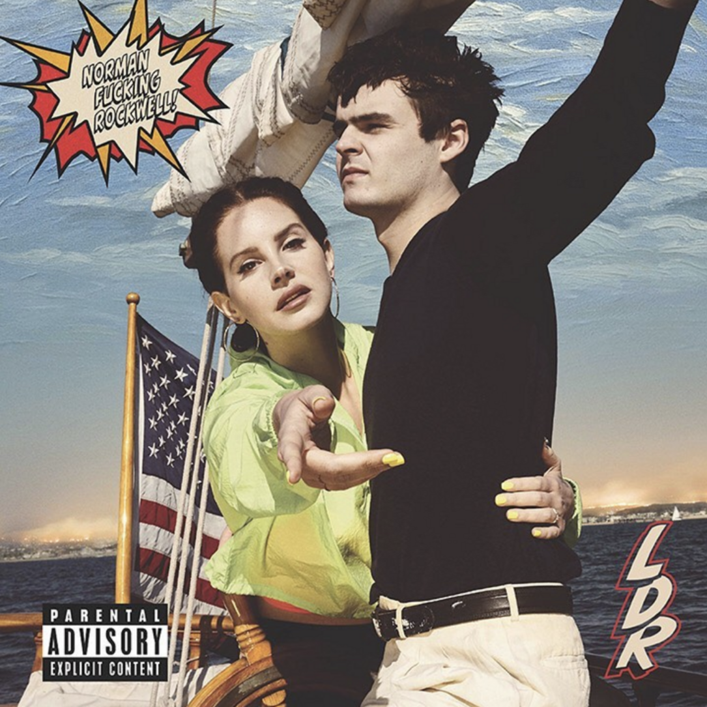
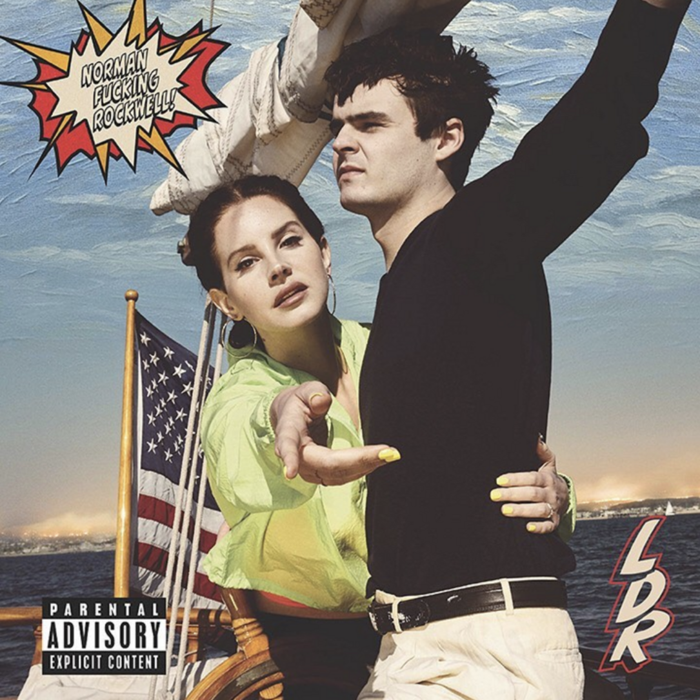

BLUE BANISTERS
Released in October 2021
Produced by
- Zachary Dawes
- Gabe Simon
- Drew Erickson
- and several others
Blue Banisters is the eighth studio album by American singer-songwriter Lana Del Rey. It was released on October 22, 2021, by Interscope and Polydor Records, seven months after her previous record, Chemtrails over the Country Club. It is also my favourite album by Lana del Rey, esprecially now as autumn is approaching. It contains a lot of rock-inspired music, but shys away from her old albums by focusing more on Lanas personal family life and she shares her views on political movements such as BLM
Tracklist
- Textbook
- Blue Banisters
- Arcadia
- Interlude - the trio
- Black bathing suit
- If you lie down with me
More songs
- Beautiful
- Violets for roses
- Dealer
- Thunder
- Wildflower wildfire
- Nectar of the gods
 
